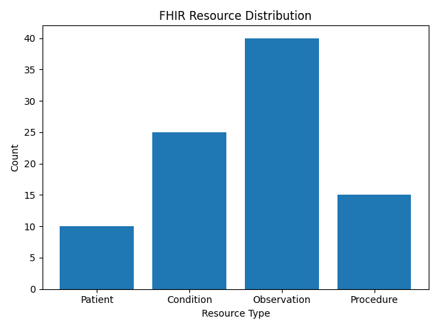
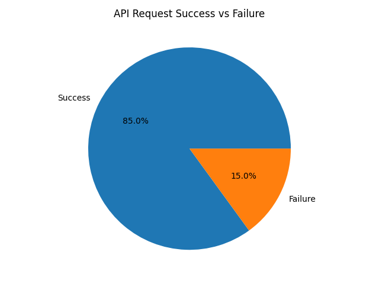

FHIR Resource Distribution |
API Success vs Failure |
| Visualization | What It Shows | Insight |
|---|---|---|
| Bar Chart | Displays the distribution of FHIR resources used in the ETL pipeline (Patient, Condition, Observation, Procedure). | Observation data has the highest count, indicating that patient vitals and measurements are the most frequently processed data in the pipeline. |
| Pie Chart | Shows the proportion of API request success versus failure during data extraction and loading. | A high success rate (~85%) demonstrates that the ETL pipeline is stable and reliable, with minimal API failures. |